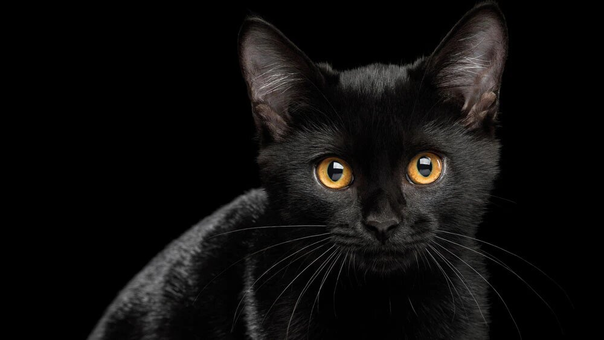

Самые красивые кошки в мире
Кошки — уникальные животные. Независимые и самолюбивые от природы, они могут быть очень
домашними — ласковыми и послушными.

Вот несколько пород кошек ,на мой взгляд, самых красивых:
- Американский кёрл

- Ангорская кошка

- Бирманская кошка

- Бомбейская кошка

- Манчкин

- Сиамская кошка
10 кошачьих особенностей, которых нет у других животных
- Способность прыгать
Кошки, как никто другой, могут считаться профессионалами в прыжках.
Достаточно вспомнить, что они легко могут запрыгнуть на высоту,
в несколько раз превышающую их рост.
- Способность падать без повреждений
Благодаря строению тела и какой-то просто запредельной пластичности,
кошки также могут падать без серьезных повреждений.
- Шершавый язык
Отличительной особенностью кошек являются жесткие волоски, которыми покрыт их язык.
- Способность втягивать и выпускать когти
Кошачьи лапки, в отличие от собачьих, могут быть как удивительно мягкими,
так и весьма грозным оружием.
- Мурчание
Конечно, какая же кошка и без своей визитной карточки — мурчания!
- Способность отлично видеть в темноте
Кошки прекрасно ориентируются практически в полной темноте благодаря строению глаза,
который отражает малейший проблеск света.
- Вертикальный зрачок
Зрачок, который способен сужаться практически до тонкой нити и расширяться,
почти закрывая радужку, — одна из отличительных особенностей кошек.
- Очень острый слух
Кошки — прирожденные охотники. Благодаря острейшему слуху они способны ориентироваться
даже в полнейшей темноте.
- Бесшумность
Еще одна отличительная способность кошек — ходить абсолютно бесшумно для человеческого уха.
- Гипноз
Иначе и не объяснить то, что люди готовы выполнять желания кошек.
Ссылка на источник материалов